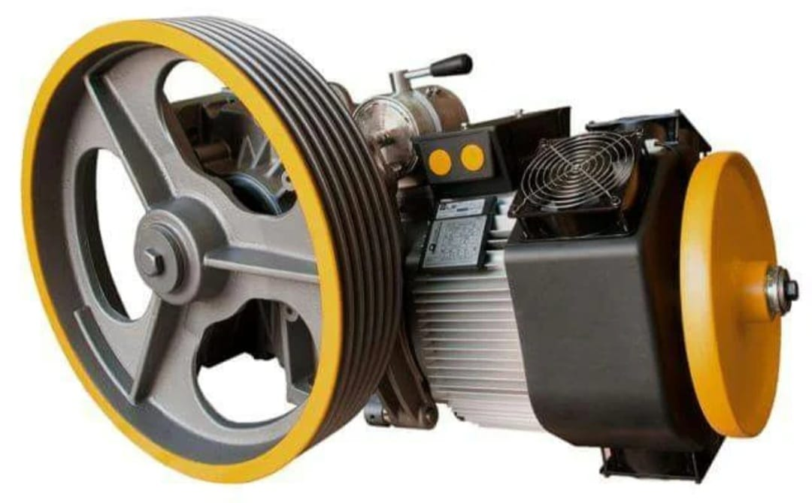
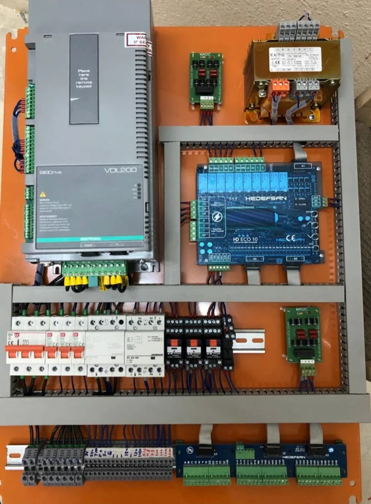
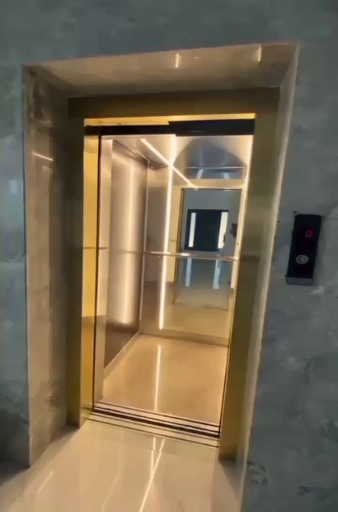
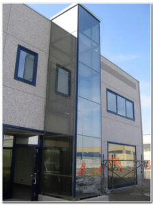
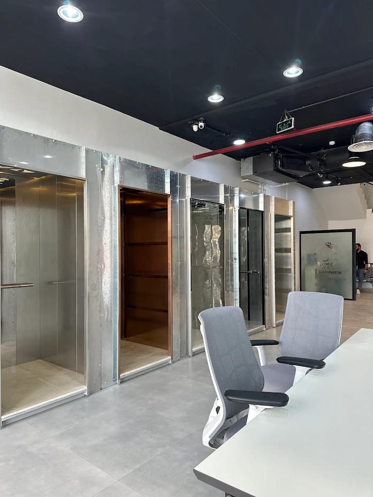
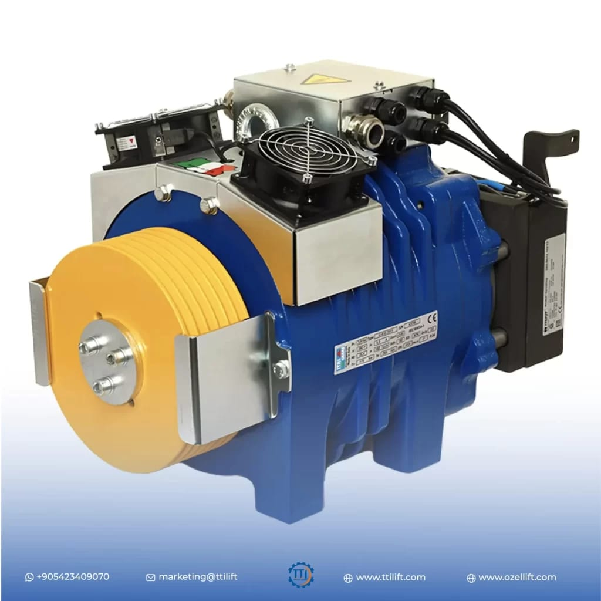

محرك المصعد
محرك قوي وموثوق يتناسب مع أنظمة المصاعد الثقيلة ويضمن حركة سلسة.
في هذه الصفحة يمكنك رؤية وصف للخدمات الأساسية مع صور توضيحية. ضع الصور الحقيقية داخل مجلد images بنفس الأسماء.

محرك قوي وموثوق يتناسب مع أنظمة المصاعد الثقيلة ويضمن حركة سلسة.

لوحة تحكم كهربائية متكاملة مع دوائر أمان حديثة وإعدادات دقيقة.

تصميم داخلي أنيق للمقصورة مع تشطيبات عالية الجودة توفر راحة للمستخدمين.

واجهة مصعد زجاجية ومودرن تضيف مظهرًا احترافياً للمبنى.

أبواب مصعد أنيقة وتصميم عملي يتناسب مع أعلى معايير السلامة.

مجموعة محرك ودفع حديثة لضمان حركة سلسة وأمان عالي للمصعد.